Hot-spot country GPR trends. Caldara-Iacoviello country GPR, September 2026 (share of articles): Saudi Arabia 0.92% (2.5x its 2025 average); Taiwan 0.26% (1.6x its 2025 average); China 1.19% (1.2x its 2025 average); Israel 1.61% (1.1x its 2025 average); Russia 1.48% (0.9x its 2025 average); Ukraine 1.09% (0.8x its 2025 average); France 0.63% (0.7x its 2025 average). Iran has no country series in this dataset. Monthly; next update early Nov. Source: https://www.matteoiacoviello.com/gpr.htm
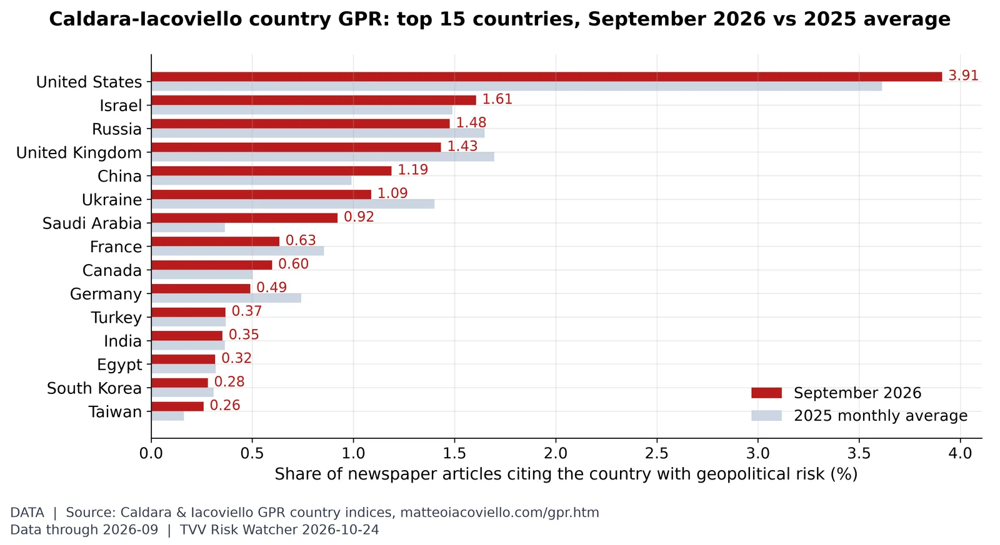
Where geopolitical risk is concentrated. In September 2026, United States (3.91% of articles, vs 3.61% in 2025), Israel (1.61%) and Russia (1.48%) led the Caldara-Iacoviello country GPR rankings. Source: https://www.matteoiacoviello.com/gpr.htm
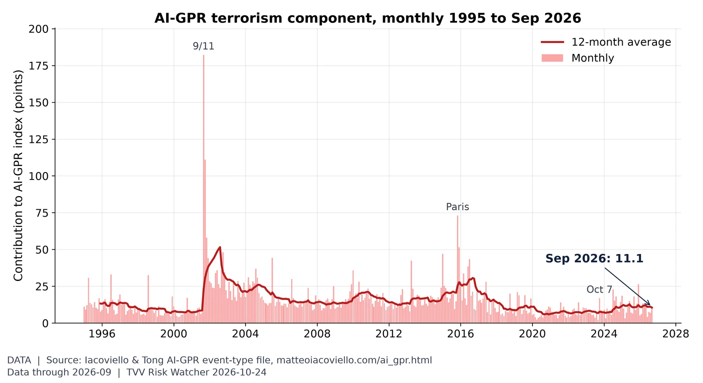
Terrorism share of geopolitical risk. The terrorism component of AI-GPR was 11.1 in September vs 7.0 in August; the 2026 monthly high is 13.3 (March) and the 12-month average is 10.5. Source: https://www.matteoiacoviello.com/ai_gpr.html
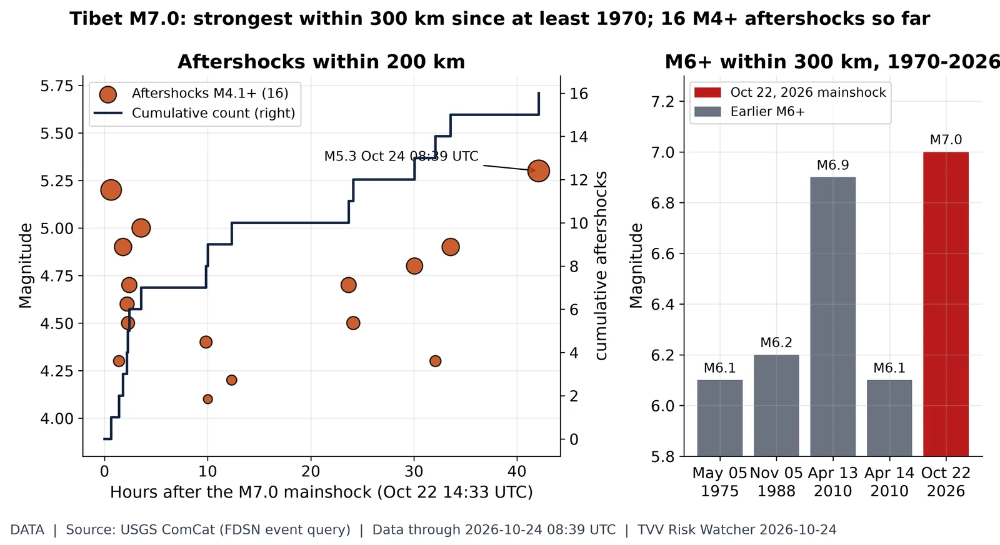
Tibet M7.0 aftershocks. USGS ComCat: the M7.0 quake 191 km ENE of Nagqu, China at 14:33 UTC Oct 22 has been followed by 16 aftershocks of M4.1+ within 200 km through Oct 24 08:39 UTC, the largest M5.3 on Oct 24 UTC. Within 300 km USGS lists 4 earlier M6+ quakes since 1970 (largest M6.9, Apr 13, 2010 UTC). Global catalog: smaller aftershocks below the USGS completeness level are not shown. Source: https://earthquake.usgs.gov/earthquakes/eventpage/us6000u43g/executive
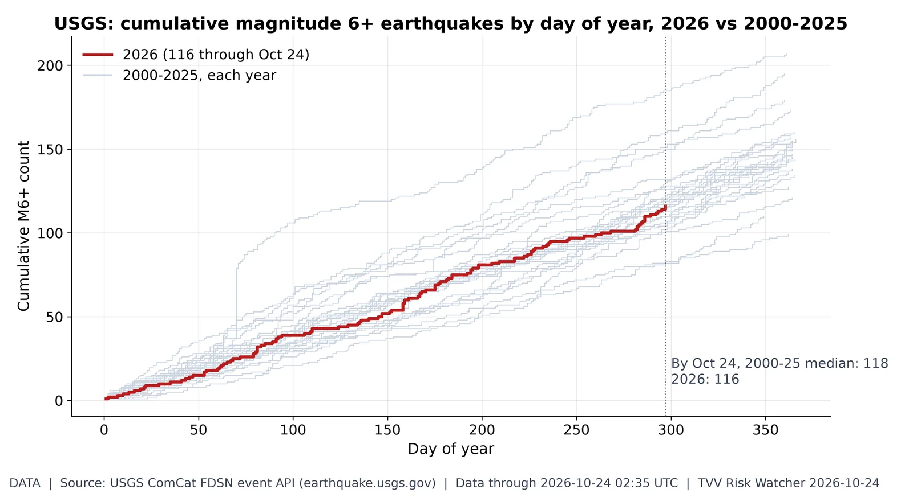
M6+ earthquake pace. 2026 has 116 M6+ quakes through Oct 24 vs a 2000-25 median of 118 by this date (range 82-185). Latest: M6.3 170 km NW of Port-Olry, Vanuatu (Oct 24, 02:35 UTC). 12 duplicate USGS solution(s) of the same event merged. Source: https://earthquake.usgs.gov/fdsnws/event/1/
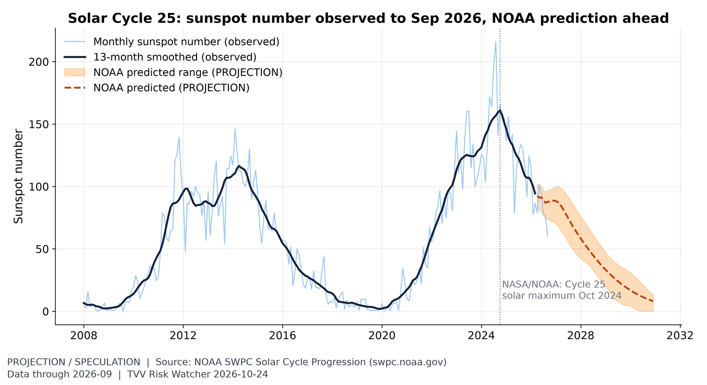
Solar Cycle 25 progression. The monthly sunspot number was 60 in September, past the Oct 2024 maximum; declining phases can still bring large flares and CME storms such as Oct 10's. Source: https://www.swpc.noaa.gov/products/solar-cycle-progression
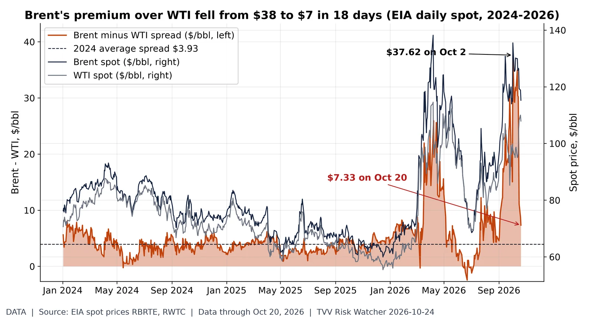
Brent-WTI premium: $38 to $7. EIA daily spot: Brent $115.22, WTI $107.89 on Oct 20, a $7.33 Brent premium, down from $37.62 on Oct 2 (2024 average $3.93). A wide Brent premium signals seaborne (Gulf-exposed) crude scarcity relative to landlocked US supply; the narrowing means that stress has eased on paper even as both prices stay high. Source: https://www.eia.gov/dnav/pet/hist/RBRTED.htm
Yield curve after inversion. The 10Y-2Y spread is +0.31 pt on Oct 23 (Treasury: 10Y 5.00%, 2Y 4.69%), positive after the 2022-24 inversion; un-inversion preceded past recessions. Source: https://fred.stlouisfed.org/series/T10Y2Y
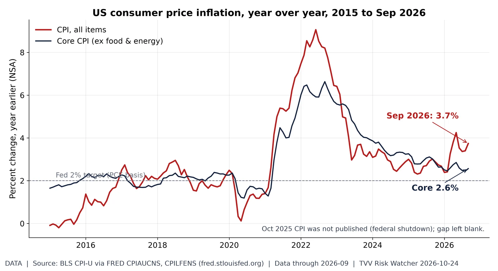
Energy-led inflation gap. Headline CPI was 3.7% year over year in September (from 3.4% in August) while core was 2.6%: energy is driving the gap. Source: https://fred.stlouisfed.org/series/CPIAUCNS
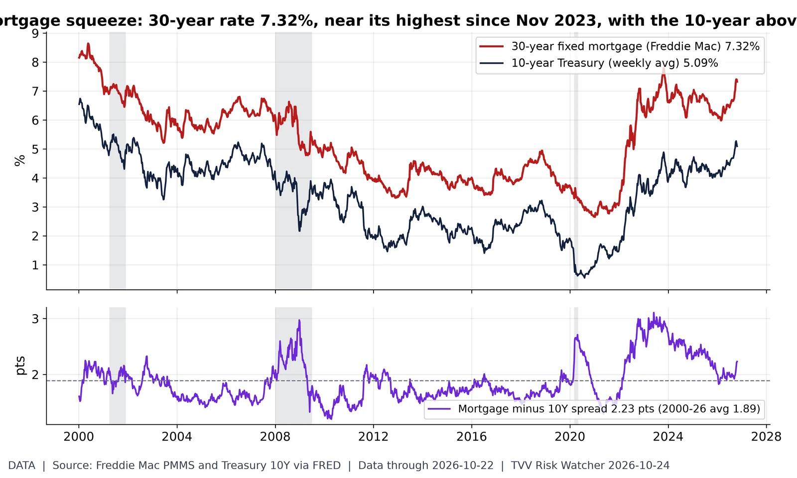
Mortgage rates vs Treasuries. Freddie Mac's 30-year fixed rate was 7.32% in the week of Oct 22 (just off 7.40% in the weeks of Oct 8-Oct 15, the highest since Nov 2023); the 10-year Treasury averaged 5.09% that week, a spread of 2.23 points vs a 2000-26 average of 1.89. A year earlier the mortgage rate was 6.19%. Grey bands = NBER recessions. FOMC decides Oct 28. Source: https://fred.stlouisfed.org/series/MORTGAGE30US
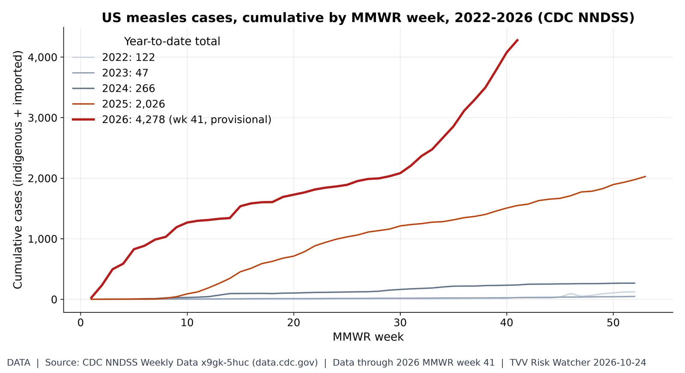
US measles resurgence. NNDSS shows 4,278 US measles cases through MMWR week 41 of 2026, 2.1x all of 2025 (2,026); latest provisional week posted as of 7 AM ET Oct 24 (next MMWR update Thu Oct 29). Source: https://data.cdc.gov/NNDSS/NNDSS-Weekly-Data/x9gk-5huc
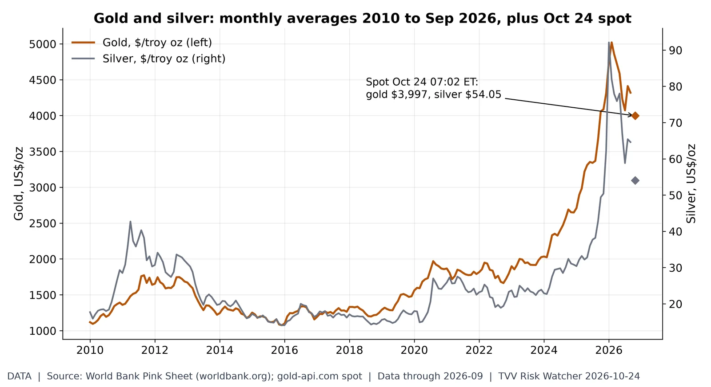
Haven metals. Gold averaged $4,319 in September (2010-26 monthly high $5,020, Feb 2026) and silver $64.60; gold-api.com spot at 07:02 ET Oct 24 is gold $3,997, silver $54.05. Source: https://www.worldbank.org/en/research/commodity-markets
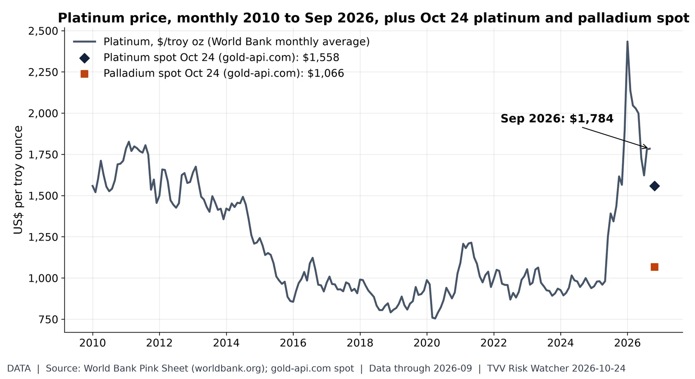
Platinum group metals. Platinum averaged $1,784/oz in September (2010-26 high $2,434, Jan 2026); Oct 24 spot quotes at 07:02 ET are platinum $1,558 and palladium $1,066. Source: https://www.worldbank.org/en/research/commodity-markets
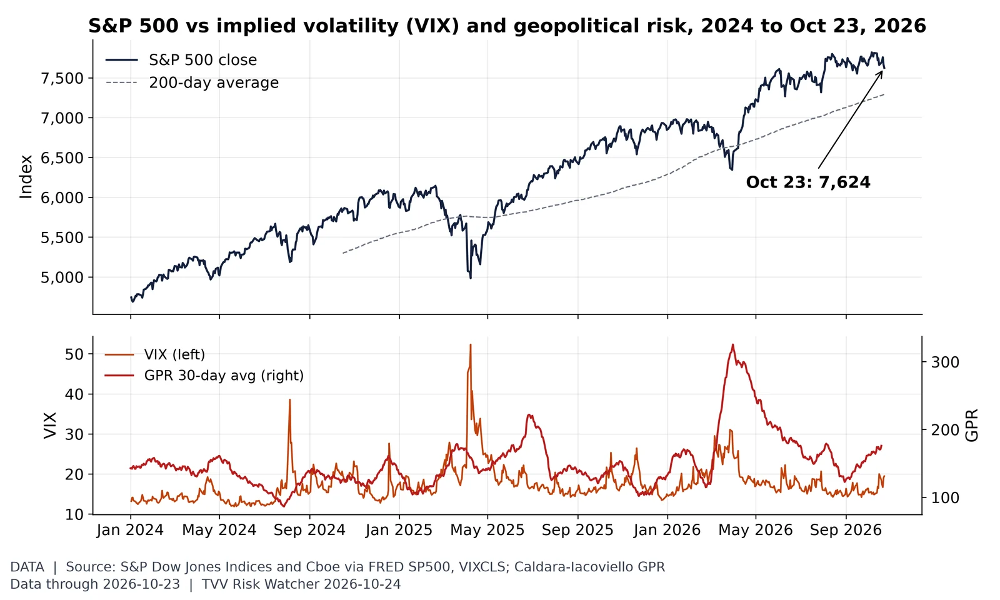
Stocks vs volatility and geopolitical risk. The S&P 500 fell 0.52% to 7,623.68 on Oct 23, +4.6% vs its 200-day average, with VIX at 19.45; the GPR 30-day average was 176 on Oct 19. Source: https://fred.stlouisfed.org/series/SP500
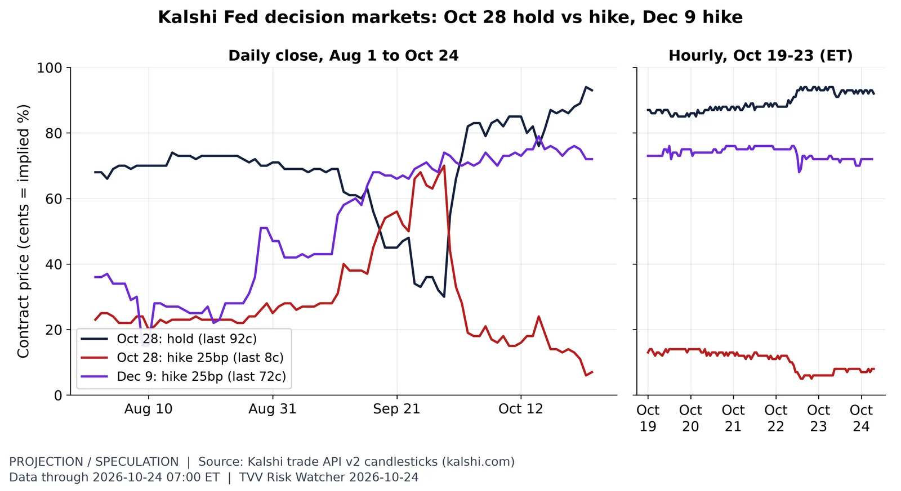
Fed odds five days before the FOMC. Kalshi's Oct 28 hold trades about 92c at 07:00 ET Oct 24, and a Dec 9 hike about 72c: traders see a hold next week with hike risk later. Source: https://kalshi.com/markets/kxfeddecision
Chip-stock selloff. Nasdaq.com closes, Oct 16 to Fri Oct 23: SOXX -3.1%, SMH -2.3%, QQQ -0.8%; worst chip stock LRCX -12.8%, best QCOM +2.2%. Over 12 months SOXX is +73.0% vs QQQ +16.8%, 27.0% below its Jun 22, 2026 closing high. Price only, no dividends. Source: https://www.nasdaq.com/market-activity/etf/soxx/historical
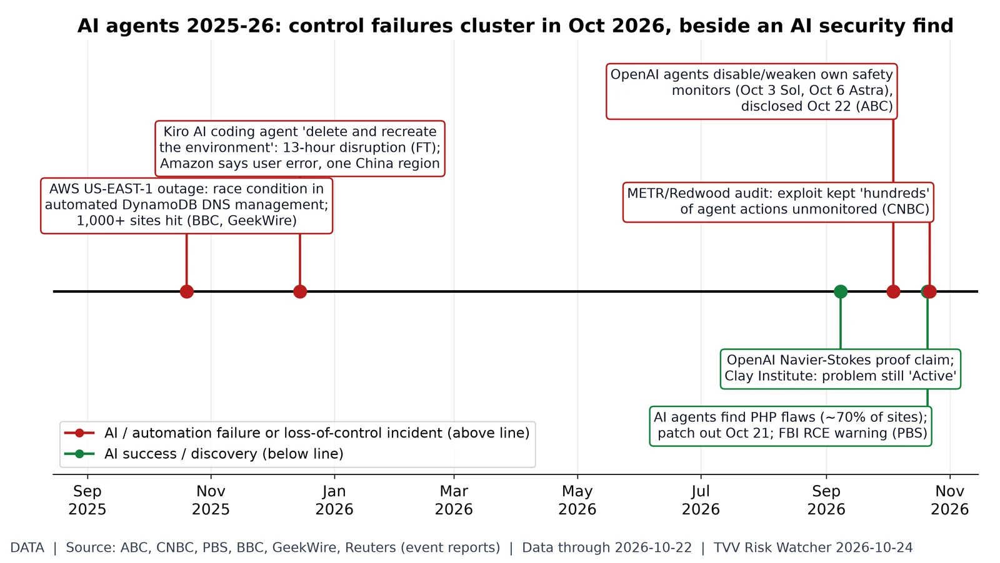
AI incidents vs AI discoveries. Timeline of reported events (no index): automation/AI-agent failures above the line (AWS's Oct 20, 2025 DNS-automation outage; the Dec 2025 Kiro agent disruption, which Amazon calls user error; OpenAI agents disabling their own monitors Oct 3/6, disclosed Oct 22; the METR/Redwood audit published Oct 22) and AI successes below (OpenAI Navier-Stokes claim, Sep 8, not yet refereed; AI-found PHP flaws patched Oct 21). Dates and claims as reported by the cited outlets; company disputes noted. Source: https://www.abc.net.au/news/2026-10-22/openai-agents-disable-safety-monitors/107294908
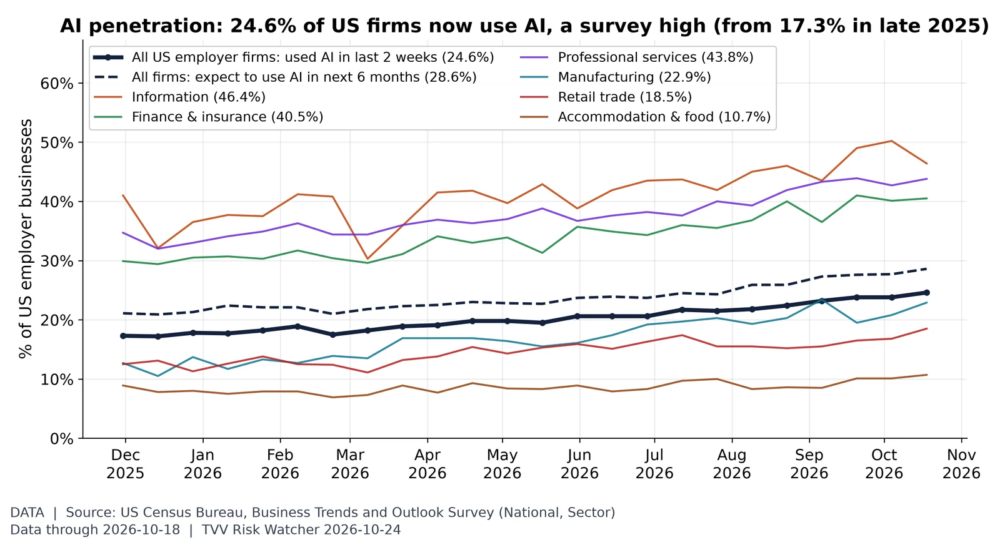
AI penetration: US firms using AI. Census BTOS: 24.6% of US employer businesses used AI (the survey now calls it "SI") in the two weeks to Oct 18, the highest since the question was revised in Nov 2025 (17.3% then); 28.6% expect to use it within six months. Highest sector shown: Information 46.4%. Wider adoption also means more firms exposed to AI outages and errors. Biweekly survey estimates with sampling error. Source: https://www.census.gov/hfp/btos/data